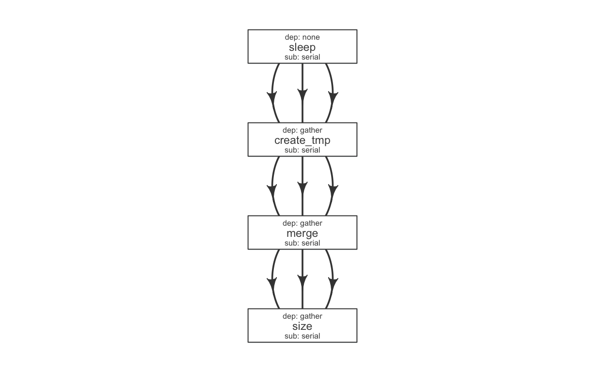
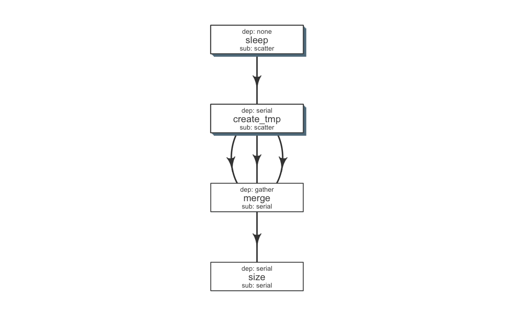

A pipeline consists of several pieces, most essential of which is a function which generates a flowmat. Additionally, we need a flow definition, which descibes flow of the pipeline. These three files are available under the pipelines folder on github.
~/flowr/pipelines/
|--- sleep_pipe.R A R script, with sleep_pipe(), which creates a flowmat
|--- sleep_pipe.def A tab-delimited flow definition file
|--- sleep_pipe.conf An *optional* tab-delimited configuration file,
defining default parametersTo run the aforementioned pipeline, we would follow through these steps:
load_opts("sleep_pipe.conf") ## optionally, load default parameters
source("sleep_pipe.R") ## get sleep_pipe() function
flowmat = sleep_pipe() ## create a flowmat
flowdef = as.flowdef("sleep_pipe.def") ## read a flow definition.
fobj = to_flow(flowmat, flowdef, execute = TRUE) ## create flow and submit to cluster
## OR assuming we have these three files in the ~/pipelines folder:
fobj = run("sleep_pipe", execute = TRUE); module A R function which creates a flow mat, is a module. Using module + flowdef, we can run a pipeline.
The sleep_pipe calls the three other functions (modules); fetches flowmat from each, then rbinds them, creating a larger flowmat. You may refer to the sleep_pipe.R file for the source.
#' @param x number of files to make
sleep_pipe <- function(x = 3, samplename = "samp1"){
## call the modules one by one...
out_sleep = sleep(x, samplename)
out_create_tmp = create_tmp(x, samplename)
out_merge_size = merge_size(out_create_tmp$outfiles, samplename)
## row bind all the commands
flowmat = rbind(out_sleep$flowmat,
out_create_tmp$flowmat,
out_merge_size$flowmat)
return(list(flowmat = flowmat, outfiles = out_merge_size$outfiles))
}## create a flow matrix
out = sleep_pipe(x = 3, "sample1")
flowmat = out$flowmat| samplename | jobname | cmd |
|---|---|---|
| sample1 | sleep | sleep 6 && sleep 8;echo ‘hello’ |
| sample1 | sleep | sleep 0 && sleep 1;echo ‘hello’ |
| sample1 | sleep | sleep 1 && sleep 3;echo ‘hello’ |
| sample1 | create_tmp | head -c 100000 /dev/urandom > sample1_tmp_1 |
| sample1 | create_tmp | head -c 100000 /dev/urandom > sample1_tmp_2 |
| sample1 | create_tmp | head -c 100000 /dev/urandom > sample1_tmp_3 |
| sample1 | merge | cat sample1_tmp_1 sample1_tmp_2 sample1_tmp_3 > sample1_merged |
| sample1 | size | du -sh sample1_merged; echo ‘MY shell:’ $SHELL |
Next, we need a flow definition.
flowr enables us to quickly create a skeleton flow definition using a flowmat, which we can then alter to suit our needs. A handy function to_flowdef, accepts a flowmat and creates a flow definition.
The default skeleton takes a very conservative approach, creating all submissions as serial and all dependencies as gather. This ensures robustness, compromising efficiency.
def = to_flowdef(flowmat) ## create a skeleton flow definition
suppressMessages(plot_flow(def))
We can make the following changes to make this more efficient (run steps in parallel):
scatter/parallel (none)serial)gather)serial)dependencies mentioned in ()
def$sub_type = c("scatter", "scatter", "serial", "serial")
def$dep_type = c("none", "serial", "gather", "serial")
kable(def)| jobname | sub_type | prev_jobs | dep_type | queue | memory_reserved | walltime | cpu_reserved | platform | jobid |
|---|---|---|---|---|---|---|---|---|---|
| sleep | scatter | none | none | short | 2000 | 1:00 | 1 | torque | 1 |
| create_tmp | scatter | sleep | serial | short | 2000 | 1:00 | 1 | torque | 2 |
| merge | serial | create_tmp | gather | short | 2000 | 1:00 | 1 | torque | 3 |
| size | serial | merge | serial | short | 2000 | 1:00 | 1 | torque | 4 |

Tip: Alternatively, one may write this to a file (write_sheet(def, "sleep_pipe.def")), make changes in a text editor and read it again (as.flowdef("sleep_pipe.def").
Next, we create a flow object:
fobj = to_flow(flowmat, def, flowname = "sleep_pipe")Finally, we can submit this to the cluster:
plot_flow(fobj)
submit_flow(fobj) ## dry run
fobj2 = submit_flow(fobj, execute = TRUE) ## submission to LSF cluster
## after submission, we can use the following:
status(fobj2) ## check status
rerun(fobj2) ## re-run from a intermediate step
kill(fobj2) ## kill it!